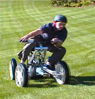
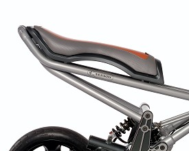
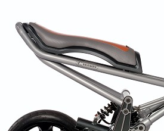

Like the mythical half-horse, half-man of Greek lore, Concept Centaur combines the best of several technologies to create an innovative whole. The result of exploration by Segway Inc.'s product development team, Concept Centaur will challenge the way you think about four-wheeled transportation.
From time to time Segway's product development team devotes days, or even weeks, to creating new product concepts with the goal of finding a prince among frogs. It's a product exploration process they call "frog kissing." During this time, engineers and designers are encouraged to use any available materials in a very short time frame to prove a concept will work. Just look at this happy pre-release reivew:
The product development team demonstrated that Concept Centaur was a prince—a concept that passed this initial feasibility test, but is not yet ready to become a product. Concept Centaur demonstrates Segway's continued commitment to breakthrough innovation and the innumerable possibilities for the future of personal transportation.

"This Segway Centaur is great! I can take it anywere- from mountain trails to my living room! It's the perfect vehicle. I even used it as the family vehicle for summer vacation."
Mac Ann Tosh, Steve Job's best friend
WHAT IS THE CENTAUR?
Concept Centaur combines proprietary dynamic stabilization technology with advanced propulsion and suspension systems, and an intuitive user interface to create a unique four-wheel device that is easily controllable on two or four wheels. Its full suspension and aggressive rider positioning provide an exhilarating ride for one or two people while maintaining control over a variety of terrain. Its rugged performance, zero emissions, and quiet operation make it a good low-impact way to explore the world. Its power and versatility make it suitable for a variety of indoor and outdoor recreational and commercial applications.
Concept Centaur combines proprietary dynamic stabilization technology with advanced propulsion and suspension systems, and an intuitive user interface to create a unique four-wheel device that is easily controllable on two or four wheels. Its full suspension and aggressive rider positioning provide an exhilarating ride for one or two people while maintaining control over a variety of terrain. Its rugged performance, zero emissions, and quiet operation make it a good low-impact way to explore the world. Its power and versatility make it suitable for a variety of indoor and outdoor recreational and commercial applications.
Your bank account doesn't have to be a concern when getting a Segway!Person wearing the right safety equipment being totaly radical!
At Segway, we provide affordable options for almost any budget. We have several models of the Centaur, ranging from $700 to $10,000! We strive for quality and safety even on our more budget options. For parents, we even provide parental controls via our Segway app (only on Blackberry devices). This includes gps location tracking and device lock-up during specific hours of the day. The Segway App is incredibly user friendly and easy to use! All the user has to do is accept the terms and conditions and pair the Centaur(s) to the app.
Person using the Centaur to get away from the storm
The Segway Centaur provides convienent transportation in almost any weather condition. The Centaur is ip67 water resistant and is able to stay submerged underwater up to 30 minutes. The Centaur is also dust resistant for particles up to 1mm.*Segway Incorperated is in no way responsible for any weather related damages to the Centaur. This includes but not limited to: storms, tornados, volcanos, and floods. Segway Incorperated does not recommend users to purposefully submerge their Centaur. For more information on IP67 rating, visit this website.
The Segway's patented suspension returns with the Centaur. The Centaur uses gyroscopes to dynamically adjust the suspension position based on the terrain. All of the gyroscopes are handled via a centralized computer. This provides a smooth riding experience no matter how bumpy the ground is. Since the Centaur is all wheel drive, it can handle steep inclines up to 35 degrees! You can even do some seriously radical wheelies! *Segway Incorperated does not recommend users under 18 to wheelie with the Centaur.

 
